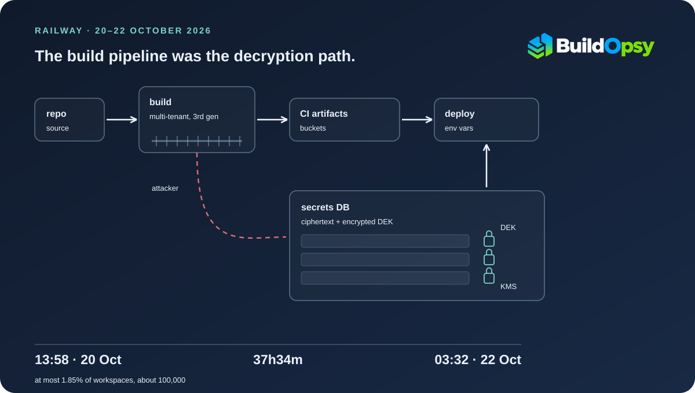

1. What the Record Establishes, and What It Withholds
Railway published a preliminary report on 22 October 2026 and has not published a final one. As of 29 October, the public record consists of that report, an initial disclosure from 21 October, the status page for the incident, a set of recovery guides, and three paragraphs of Monday-morning FAQ. Everything in this piece is drawn from those documents. Where they disagree, the disagreement is stated rather than resolved by preference.
The disclosed facts are these. Railway's monitoring paged on-call at 13:58 UTC on 20 October for elevated latency. By 16:51 engineering had concluded that an external party was attempting privilege escalation through the build infrastructure and halted build pipelines. The company says the attack window ran from 13:58 on 20 October to 03:32 on 22 October, when it confirmed the intruder no longer had access to any internal system: 37 hours and 34 minutes. It says at most 1.85% of workspaces had some environment variable potentially compromised, which it puts at about 100,000 workspaces.
What the report withholds is more interesting than what it gives. It does not describe the exploit. It says the campaign was trying to obtain AI provider API keys for distillation attacks, that the actor had "access to abliterated models and substantial compute resources", and that technical detail would come with the investigation's conclusion. It does not confirm whether the attacker read customer source code, only that it is "not ruling out" that possibility. It does not say how the CI environment was reached. And it does not put a number on the environments the attacker actually read rather than could have read.
The last point matters for anyone using the 1.85% as a risk estimate. The report is explicit that the figure is a ceiling derived from what the platform's isolation allows, not a count of confirmed reads: "at most 1.85% of all workspaces had some environment variables potentially compromised." The word is potentially. Railway also says the cohort it emailed as higher risk is larger than that percentage, because it could not identify which variables inside an affected environment were decrypted.
2. Fifty-Nine Minutes Between the Finding and the Revocation
Railway's variable encryption is documented in a 2024 engineering post that is worth reading before the incident timeline, because it explains why the next paragraph happened at all. The company moved from calling Google Cloud KMS once per variable to envelope encryption: one 256-bit AES-GCM data encryption key (DEK) per environment, generated locally, encrypting every variable in that environment.
The design choice that matters here is where the wrapped key lives. Railway serializes the encrypted DEK next to the ciphertext in the same database value, as a JSON string containing both fields. That is a deliberate, standard trade, and the 2024 post gives two reasons for it. Rotation would otherwise mean keeping a list of old keys to try or re-encrypting every variable inside one large transaction, and storing the wrapped key beside the value is what let Railway read legacy and envelope-encrypted rows side by side during its migration. The same post explains why one DEK covers a whole environment rather than one variable: one unwrap per deployment covers an environment's variables, which turns what would be a hundred or more trips to the key service into one. The cost is that a ciphertext carries everything needed to attempt decryption except the key-encryption step. Decrypting a variable means unwrapping the DEK through KMS once, caching it for the life of the request, and doing the AES work locally.
So a copy of the variables table is not a set of plaintext secrets, but it is also not a locked box with the key held elsewhere. It is a locked box with another locked box taped to the side, and the only missing piece is an identity that KMS will answer.
At 04:24 UTC on 21 October, Railway's forensics established that the attacker had pulled secrets in encrypted form and, at that time, could not decrypt them. The report's next timestamp is 05:23, when engineering began revoking access to the identified systems. That gives 59 minutes between the forensic finding and the start of revocation. The report does not time the pull itself and does not say how long the intruder had held the ciphertext before 04:24, so the interval is a gap between two events, not a measured hold. It is still the most encouraging stretch in the document: for as long as the record can show, the cryptography was doing its job.
3. The Pivot Was a Permission
Between 05:27 and 07:25 the report places the attacker inside Railway's CI environment, where it says the attacker "was able to decrypt artifacts that held additional API access." Revocation ran from 05:23 to 05:27, and the CI environment's compromise begins at the minute revocation ended.
A four-minute window is not enough time to rotate a credential that a build system already holds, and the report does not claim otherwise. The plain reading is that whatever identity gave access to the CI environment was not among the systems revoked in that four-minute window. That is an inference from two adjacent timestamps, not a statement Railway makes, and the final report may describe a different sequence.
What the record does support is a structural point that outlives this incident. A deployment platform has to resolve environment variables at deploy time, which means the path that builds and ships code can, by design, obtain plaintext secrets. That is not a flaw in the build system; it is the build system's job. But it moves the security boundary. If an attacker can act as the builder, encryption at rest protects the rows and not the deployment.
Between 07:25 and 09:18 Railway found database evidence of an unauthorized query of encrypted environment variables "of which a subset were decrypted utilizing a combination of the compromised credentials." The report adds a detail that reads like an admission of a design limit: because the keys were envelope encrypted, the query alone could not identify which variables in an affected customer's project had been read. At 09:18 staff read the attacker's payload logs and learned which API key names were being searched for. At 09:25 vendors were notified.
Nothing in the report says KMS was compromised. Nothing in it says the CI environment could call KMS directly. The report attributes the decryption to "a combination of the compromised credentials," which is a category, not a component. Anyone asserting a specific KMS path is going beyond the source.
4. Rotate Now, Redeploy Later
The part of this incident that reached the most customers was not the intrusion. It was the sequencing of the remediation.
Builds were halted at 16:51 on 20 October. The security notice telling every customer to revoke all environment variables stored in Railway went up at 20:44 on 21 October, 27 hours and 53 minutes later; the status page linked it at 21:59, 29 hours and 9 minutes after the halt. Builds came back in tiers on 22 October: Enterprise at 03:32, Pro at 06:29, Hobby at 21:08, and Free and Trial at 22:49.
Read those numbers as a single customer. A Hobby user who read the notice at 20:44 on 21 October and rotated their database password immediately could not redeploy until 21:08 the following evening: 24 hours and 24 minutes of holding a new credential their running application had never seen. A Free or Trial user waited 26 hours and 5 minutes. For Enterprise the same gap was 6 hours and 49 minutes.
The mechanism is ordinary and easy to underestimate. Environment variables are injected when a deployment starts, so a running process keeps the value it read at boot. Rotating a key in the dashboard changes the stored value; it does not change the process. Railway said as much on its status page on 21 October at 22:10: "Because deployments are paused, you will not be able to redeploy your services to pick up the new credentials until builds are restored."
Add the vendor side and the second-order effect appears. Railway asked providers to revoke listed keys from 09:25 on 21 October, before the public notice. A customer who rotated a provider key that afternoon, as instructed, and could not redeploy, was running an application whose outbound calls now carried a revoked credential. The failure mode of following the advice was an outage the customer caused by complying.
Railway's FAQ gives the reason for the ordering, and it is a real constraint rather than an excuse: telling users to roll credentials while the attacker was still inside would have made the new credentials immediately compromised. The problem is not the decision to wait. The problem is that the disclosure was broadcast to all tiers at one moment while the ability to act on it was restored tier by tier over the following 26 hours. The two schedules were never aligned.
5. Two Clocks That Do Not Match
Railway's first public notice was fast. Builds were halted at 16:51 on 20 October; an incident titled "New builds are temporarily paused" (JUA1PC5H) appeared on status.railway.com at 17:03. Twelve minutes from decision to publication is better than most incident responses manage.
The difficulty came next. Between 18:05 and 19:53 engineering reported the exploit remediated and validated that it could not be reproduced. At 19:53 new evidence showed the attacker could escalate across multiple parts of the system in parallel. Overnight, between 00:22 and 03:08 on 21 October, builds were halted again as a precaution.
The status page did not reopen for that second halt until 07:24, when a new incident (QH8L8B3E) was created with the single line "We are currently investigating this issue." That is 4 hours and 16 minutes after the halt window closed, and 7 hours and 2 minutes after it opened. The first update says nothing about security. The 09:28 update describes dashboard, API and CLI unavailability and paused builds without a cause. Customers learned the cause from the blog at 20:44, and the status page linked it at 21:59.
Measured from the first build halt at 16:51 on 20 October, the first public statement that this was a security incident arrived 27 hours and 53 minutes later, and the status page acknowledged it 29 hours and 9 minutes after the halt. Measured from the second halt, which ran from 00:22 to 03:08, the blog arrived between 17 and 20 hours later. Both are defensible under an active-intrusion doctrine and neither is fast for customers whose pipelines were dead without explanation.
There is a smaller inconsistency worth recording because it is the kind that survives into the final report. The timeline puts vendor notification at 09:25 UTC. The FAQ, three sections later, puts it at 09:35. One of those is a typo. Neither is material to impact, and both will be quoted by someone, so the final report should settle it.
6. What the Isolation Actually Bought
The 1.85% figure is the strongest evidence in the report that the architecture did what it was designed to do. Per-environment data keys mean one environment's variables cannot be decrypted with another's key, so a bulk read of the variables table does not become a bulk read of every customer's secrets. Without that boundary, a query returning a subset of decrypted rows would have been a platform-wide disclosure.
The arithmetic is worth doing once, carefully, because the report gives both halves. If 100,000 workspaces are at most 1.85% of the total, the implied platform has about 5.4 million workspaces (100,000 divided by 0.0185 is 5,405,405). Railway's 26 October update refers to "our 5 million existing users." The two figures only reconcile if users and workspaces are different units, because 100,000 against 5.0 million would be 2.0% and exceed the stated ceiling. They are close enough to suggest one platform seen through two denominators, and that is as much as the record supports.
The same arithmetic also shows the limit of the claim. A 1.85% ceiling on a 5.4-million-workspace platform is still up to 100,000 workspaces. The report does not say how many of those had variables decrypted, only that it could not determine which ones from the query evidence alone. The upper bound is bounded; the actual read set is unknown.
There is also a rotation question the report leaves open. It says Railway "rolled all keys, and then rerolled them after validating that the intruder had been expropriated from the system." It does not say the per-environment DEKs were rotated, and it does not describe re-encrypting stored variables under new data keys. Rotating platform credentials and rotating the keys that protect customer ciphertext are different operations, and only the second one retires the value of a copied row. The final report should say which happened.
7. Guardrails That Would Have Shortened This
These are narrow, and each one maps to a timestamp in the record rather than to a general principle.
- Separate the decrypt permission from the build role. The build path needs to resolve variables at deploy time. It does not need to be able to unwrap a DEK for an arbitrary environment on demand. Splitting "deploy this service" from "read these secrets" would not have stopped the initial access, but it would have removed the capability that turned ciphertext into plaintext between 05:27 and 07:25. The report's own remediation list moves to single-tenant builders, which reduces cross-tenant reach but does not by itself change what a compromised builder can decrypt.
- Alert on bulk unwrap, not bulk read. The 04:24 evidence was a read of ciphertext: alarming only if you treat ciphertext as sensitive. The signal that deserved a page was a burst of KMS unwraps or a query returning many variables outside a deploy window. Railway found the decryption from database evidence after the fact, which means the control was detective and late.
- Open a status entry within the hour when you halt a shared capability. The first halt met that bar at 12 minutes. The second did not, and the gap is what customers experienced as silence. An entry that says "builds paused again, security investigation ongoing, we will update in 30 minutes" costs nothing operationally and removes the impression that the pause was an unexplained product failure.
- Tell a tier to rotate only after that tier can redeploy. The notice reached every tier at once, but Enterprise could not redeploy until 03:32, Pro until 06:29, Hobby until 21:08, and Free and Trial until 22:49. Aligning the notice with the restore schedule, or publishing the schedule in the same post, would have prevented customers from revoking credentials they could not replace.
- Test the rotate-without-redeploy path before you need it. The status page acknowledged the trap in plain language at 22:10, which means someone understood it in real time. A rehearsed runbook that answers "what does a customer do when the key is dead and the pipeline is closed" would have produced the same answer earlier, and possibly a staging plan for builds that prioritized credential-only redeploys.
8. The Verdict
As a disclosure, this is above average. Railway published specific UTC timestamps, named the vendors it contacted, admitted that it sent providers keys beyond the confirmed set, and stated its own limit: it cannot say which variables were decrypted. It also published a preliminary report within about 20 hours of the containment timestamp and continued posting recovery updates through 26 October.
As a security outcome, the record supports three conclusions and no more. The envelope encryption held at the environment boundary and bounded exposure to a stated ceiling of 1.85% of workspaces. The boundary failed at the identity layer, where a system that could legitimately decrypt became reachable. And the remediation sequence put customers in a position where following instructions produced a new outage, for up to about 26 hours depending on their plan.
The open items are the ones that decide whether this reads as a contained incident or a larger one. The exploit itself is undisclosed. Source-code access is unconfirmed. The CI access path is unnamed. DEK rotation is unstated. A final report that answers those four questions would make this one of the better-documented platform intrusions of the year; a final report that omits them would leave the 1.85% doing work it was never meant to do.
Sources and Method
All durations are computed from the UTC timestamps printed in the sources, not from totals published elsewhere, except where a source states its own duration and that statement is quoted. The 37h34m access window is the report's own start and end timestamps. The 53h58m build outage runs from the 16:51 halt on 20 October to the 22:49 Free and Trial restoration on 22 October. The 27h53m gap runs from the same halt to the 20:44 publication of the security notice on 21 October, and the 29h09m gap runs from the halt to the 21:59 status update that linked it. Tier gaps are measured from the 20:44 notice to each tier's restoration time on the status page.
The implied workspace count is Buildopsy arithmetic on two figures the report states separately: 100,000 workspaces and a 1.85% ceiling. It is a check on internal consistency, not a disclosed platform size. The claim that CI access was outside the 05:23 revocation set is inference from adjacent timestamps and is labelled as such in the text. No claim is made about KMS being compromised, about which specific exploit was used, or about the number of workspaces whose variables were actually decrypted.
- Railway: Preliminary Report, Oct 21st Security Incident (Jacob Cooper and Angelo Saraceno, 22 October 2026; FAQ and 26 October update appended)
- Railway status: Railway Platform Outage, incident QH8L8B3E (first update 21 October 2026 07:24 UTC; resolved 23 October 22:06 UTC)
- Railway status history: incident JUA1PC5H, New builds are temporarily paused (opened 20 October 2026 17:03 UTC)
- Railway: Upgrading 3 Million Variables to Envelope Encryption (16 April 2024), for the per-environment DEK, AES-GCM, and the JSON layout storing the wrapped DEK beside the ciphertext
- Railway: security disclosure (21 October 2026), the notice linked from the 21:59 status update
- The Hacker News: Railway says intruder may have accessed customer secrets (October 2026), used only to confirm the vendor list, not as a source of technical detail
Vendor names are reported as Railway printed them. "SpaceXSI" is the spelling used in both the report and the FAQ; it is not corrected here. No independent confirmation of the intrusion's scale exists in the public record, and Railway has not published the final forensic report.